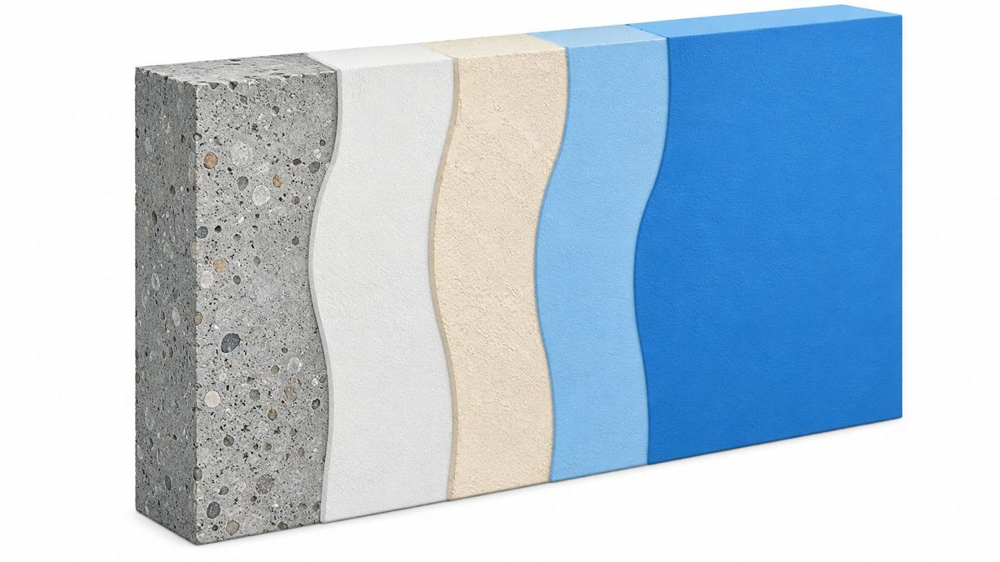

на комнату 16 м² (стены 42 м²) под два слоя уходит 10–12 л краски. Акриловая матовая — 700–1 400 руб./л, латексная — 900–1 800 руб./л, силиконовая — 1 200–2 400 руб./л. Расход: акрил 8–10 м²/л, латекс 6–8 м²/л, силикон 10–12 м²/л. Итого материалы 8 000–26 000 руб., работа маляра — 18 000–40 000 руб.
Составы: что за что отвечает
| Тип | Расход на слой | Цена за л | Где применять |
|---|---|---|---|
| Водно-дисперсионная акриловая | 8–10 м²/л | 700–1 400 руб. | жилые комнаты, коридор |
| Латексная | 6–8 м²/л | 900–1 800 руб. | кухня, детская, прихожая |
| Силиконовая | 10–12 м²/л | 1 200–2 400 руб. | кухня, ванная, зона плиты |
| Силикатная | 8–10 м²/л | 600–1 200 руб. | фасады, технические помещения |
| Моющаяся (акрил + латекс) | 7–9 м²/л | 900–1 700 руб. | коридор, кухня, детская |
Силиконовая краска паропроницаема и отталкивает воду — её берут в помещениях с конденсатом. Латексная образует плотную плёнку, поэтому в ванной без вентиляции под ней может копиться влага.
Стойкость: классы и что они значат
| Класс | Мойка | Истирание | Цена |
|---|---|---|---|
| Эконом | сухая уборка | низкое | 700–900 руб./л |
| Моющаяся | влажная губкой | среднее | 900–1 400 руб./л |
| Устойчивая к трению | щётка, мягкие средства | высокое | 1 400–2 000 руб./л |
| Для влажных помещений | влажная, с антисептиком | среднее | 1 200–2 400 руб./л |
Класс стойкости указывают на банке кодом: первый символ — влажное трение, второй — сухое. Для коридора и детской нужен класс не ниже 2 по влажному трению, иначе покрытие «засаливается» за 2–3 года.
Расход и число слоёв

| Помещение | Площадь стен | Краска в 2 слоя | Цена |
|---|---|---|---|
| Комната 16 м² | 42 м² | 10–12 л | 8 000–20 000 руб. |
| Кухня 9 м² | 26 м² | 6–8 л | 6 000–16 000 руб. |
| Коридор 6 м² | 20 м² | 5–6 л | 5 000–11 000 руб. |
| Квартира 60 м² | 150 м² | 36–44 л | 28 000–70 000 руб. |
Площадь стен считают как периметр × высоту минус окна и двери. Первый слой уходит на впитывание и расходуется на 15–20 % больше второго. Запас 10 % нужен на подкрас после перестановки мебели.
Подготовка стены
| Основание | Что делать | Грунт |
|---|---|---|
| Штукатурка | выдержать 14 дней, отшлифовать | глубокого проникновения |
| Гипсокартон | шпаклевать швы, армировать лентой | акриловый укрепляющий |
| Старая краска | снять отслаивающееся, вымыть | адгезионный |
| Бетон | обеспылить, заделать раковины | бетон-контакт |
| Обои | снять полностью | по штукатурке |
Грунт наносят в 1–2 слоя и сушат 4–6 часов. Краска по непрогрунтованной штукатурке даёт «пятна» — впитывание неравномерное, и третий слой не всегда спасает.
Колеровка и цвет
| Способ | Точность | Цена |
|---|---|---|
| Готовая база | точная | по прайсу |
| Колеровка в магазине | высокая, по каталогу | +200–800 руб. за порцию |
| Колер-паста вручную | средняя, партия к партии отличается | +150–500 руб. |
Колеровать нужно всю партию сразу и в одной таре: два разных замеса одного оттенка дают видимую границу на стене. На тёмных цветах расход выше на 10–15 % — больше пигмента, хуже укрывистость.
Инструмент: валик, ворс, кисть
| Инструмент | Параметр | Цена | Для чего |
|---|---|---|---|
| Валик | ворс 10–12 мм, 250 мм | 600–1 800 руб. | гладкие стены под покраску |
| Валик | ворс 18–20 мм, 250 мм | 700–2 000 руб. | фактурные и рельефные стены |
| Кисть флейц | 50–70 мм | 300–900 руб. | углы, примыкания, откосы |
| Кювета | 33–40 см | 300–700 руб. | равномерный набор краски |
| Малярная лента | 50 мм, на бумажной основе | 200–600 руб. | защита потолка и наличников |
Валик с коротким ворсом (6–8 мм) на шероховатой стене оставляет пропуски, с длинным (20 мм) на гладкой — «шагрень». Ворс выбирают под фактуру основания, а не под цену краски.
Паропроницаемость и микроклимат
Стены из газобетона и штукатурки должны «дышать»: паропроницаемость краски не ниже 0,05 мг/(м·ч·Па). Акрил и силикон проходят этот порог, латекс с плотной плёнкой — нет. В квартире с приточной вентиляцией разница незаметна, в помещении без вентиляции плотная плёнка приводит к конденсату на холодной стене.
| Тип краски | Паропроницаемость | Где критично |
|---|---|---|
| Силикатная | высокая | фасады, старые стены |
| Силиконовая | высокая | кухня, ванная |
| Акриловая | средняя | жилые комнаты |
| Латексная | низкая | не для влажных помещений без вытяжки |
Красить в жилой квартире лучше краской с маркировкой «для внутренних работ» и низким содержанием летучих веществ: запах уходит за 1–2 дня, полное отверждение — 7–14 дней.
Порядок работ
- Защитить пол и мебель плёнкой, снять розетки и выключатели.
- Выровнять и отшлифовать стены, обеспылить.
- Прогрунтовать в 1–2 слоя, дать высохнуть.
- Проклеить малярной лентой углы, потолок, наличники.
- Нанести первый слой валиком 250 мм, углы — кистью 50 мм.
- Высушить 4–6 часов, нанести второй слой.
- Снять ленту через 20–30 минут, пока краска не застыла.
Смета 2026
| Позиция | Комната 16 м² | Стоимость |
|---|---|---|
| Краска моющаяся | 12 л | 11 000–20 000 руб. |
| Грунт | 10 л | 1 500–3 500 руб. |
| Шпаклёвка и лента | 20 кг | 1 500–4 000 руб. |
| Малярная лента, плёнка, валики | комплект | 1 500–3 000 руб. |
| Работа маляра | 42 м² | 18 000–40 000 руб. |
Итого 33 500–70 500 руб. под ключ. Самостоятельная покраска экономит 18 000–40 000 руб., но требует 3–4 дня с сушкой слоёв.
Ошибки и их цена
| Ошибка | Последствие | Исправление |
|---|---|---|
| Краска без грунта | пятна, перерасход 20 % | перекраска 8 000–20 000 руб. |
| Разные партии колера | граница на стене | перекраска всей стены |
| Валик с коротким ворсом для фактуры | полосы и «шагрень» | шлифовка и перекраска |
| Краска по сырой шпаклёвке | пузыри, отслоение | снятие и повтор |
Чек-лист перед покупкой
- Площадь стен посчитана минус окна и двери, плюс 10 % запаса.
- Тип краски соответствует помещению: силикон — кухня и ванная, латекс — детская.
- Класс стойкости не ниже 2 по влажному трению.
- Вся краска из одной партии колеровки.
- Грунт подобран под основание.
Частые вопросы
Сколько литров краски нужно на комнату 16 м²?
10–12 л на два слоя при расходе 8–10 м²/л. Для латекса — 12–14 л, для силикона — 9–10 л.
Можно ли красить по старым обоям?
Нет. Обои снимают полностью: краска по обоям отходит вместе с ними через 1–2 года.
Чем красить потолок и стены — валиком или краскопультом?
Валик 250 мм с ворсом 10–12 мм для стен, краскопульт — для больших площадей и ровных поверхностей. Краскопульт даёт туман и требует защиты всей комнаты.
Сколько сохнет краска между слоями?
4–6 часов при +20 °C и влажности 50 %. При +15 °C — до 10 часов. Второй слой по сырому даёт пузыри.
Почему после покраски видны полосы?
Краска наносилась без растушёвки или валиком с коротким ворсом. Полосы убирают шлифовкой и повторным слоем.
Нужно ли мыть стены перед покраской?
Да, особенно на кухне: жир и пыль снижают сцепление. Моют тёплым раствором соды, затем промывают чистой водой.
Источники
Материал подготовлен с опорой на следующие документы и данные:
Дисклеймер
Материалы журнала «Ремонт на примерах» носят информационный характер. Приведённые цены, сроки и нормативы являются ориентировочными: они зависят от региона, состояния объекта, уровня исполнителей и текущей рыночной ситуации, поэтому не могут служить точной сметой или гарантией результата. Перед началом работ проконсультируйтесь со специалистами и проверяйте актуальные требования нормативных документов. Редакция не несёт ответственности за решения, принятые на основании этих материалов.